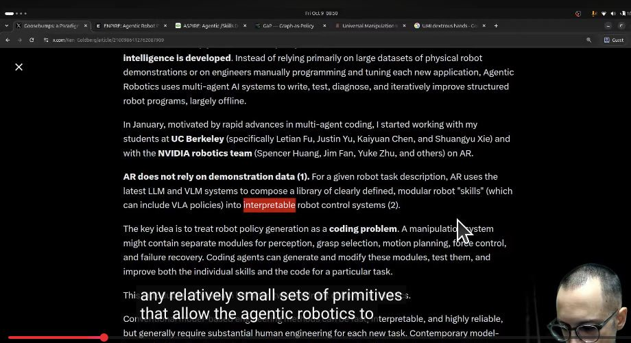
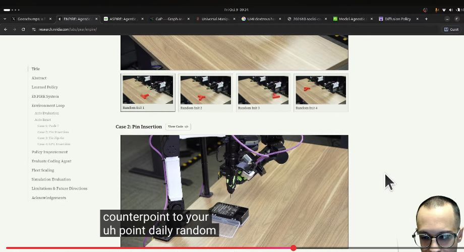
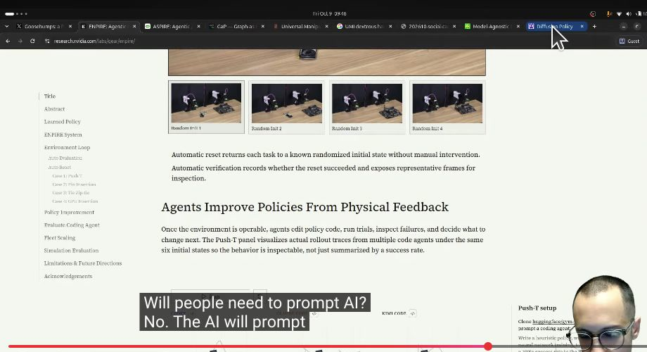

Executive summary
The important abstraction is not an LLM driving a motor. It is a closed physical improvement loop.
In this livestream, hu-po argues that a new family of systems changes how robotics research can be automated. Instead of collecting demonstrations and training one opaque end-to-end policy for every behavior, a coding agent composes existing perception, planning, grasping, and control primitives into an explicit robot program. The robot runs the program, the system records multimodal traces, an automatic evaluator decides whether the attempt worked, and the agent edits the program for the next trial.
The stream uses three 2026 projects to make the case. ENPIRE turns a physical task into an agent-operable research environment with automatic reset, verification, policy improvement, rollout, and evolutionary search. ASPIRE converts successful repairs into a continually growing skill library. Graph-as-Policy represents robot behavior as a type-checked computation graph assembled from modular skills for bounded but variable workcells.
- The environment is the real harness. An agent cannot improve a robot unless reset, observation, action, reward, logs, and safety are programmatic and reliable.
- Policy generation becomes code search. Agents inspect failures, modify modules or control flow, run another physical trial, and keep changes that improve measured success.
- Verification is part of the task definition. A self-improving loop needs a trustworthy machine-readable success signal, not a human watching every rollout.
- Skills are validated repairs with provenance. ASPIRE retrieves previously successful fixes as in-context guidance for new tasks and embodiments.
- Graphs recover structure without returning to brittle scripts. GaP composes reusable skills into explicit control flow, while self-learning focuses changes on failed nodes.
- Physical scaling has an economics problem. More agents and robots can shorten time to success, but robots sit idle while agents read logs and write code, and coordination increases token consumption.
Evidence boundary. The host repeatedly says end-to-end robotics and demonstration learning are “cooked.” The three projects do not establish that. They show strong results for specific manipulation tasks and bounded workcells, and they still use neural perception modules, learned policies, simulation, predefined primitives, and carefully engineered resets and evaluators. The credible conclusion is complementarity, not replacement.
Two paradigms
From one opaque policy to a modular program that can be inspected and changed
The end-to-end ideal maps raw observations directly to low-level actions through a learned policy. Its appeal is compression: one model appears to absorb perception, state estimation, planning, and control. Its weakness is diagnosis. When a grasp fails, the cause may be hidden across latent representations, data coverage, optimization, sensing, and dynamics.
Agentic robotics shifts the unit of improvement from weights alone to a broader executable system. A policy may contain a detector, segmenter, grasp selector, motion planner, force controller, retry rule, and learned VLA module. A coding agent can inspect logs and change one part without retraining everything. The result is not automatically simple, but it is addressable: components have names, inputs, outputs, traces, and testable contracts.

Improve policies
Make physical research repeatable through automatic reset, verification, rollouts, and code-agent evolution.
Compound repairs
Diagnose traces, validate program fixes, and preserve transferable knowledge in a skill library.
Compose workflows
Generate type-checked behavior graphs from a bounded catalog of reusable robot skills.
ENPIRE
A coding agent needs a physical CI system
ENPIRE's key contribution is not merely putting a chatbot beside a robot. It defines four modules that make physical experimentation controllable:
- Environment. Expose reset, observation, action, reward, safety, verification, and logging as callable interfaces.
- Policy Improvement. Generate or revise policy code from rewards, videos, traces, failure cases, and literature.
- Rollout. Run budgeted trials on one or more robots while preserving state, actions, video, and outcomes for audit.
- Evolution. Compare branches, transfer useful ideas between agents, keep successful changes, and prune failed hypotheses.
This resembles continuous integration, but the test runner is a robot and the test fixture is the physical world. A flaky reset poisons every later measurement. A weak evaluator rewards the wrong behavior. A missing safety boundary turns exploration into hardware risk. Environment engineering therefore dominates model choice.
Automatic reset and evaluation
Self-improvement begins only after success is machine-checkable
For zip-tie insertion, ENPIRE combines detections and segmentation masks from multiple camera views to judge whether the strap passes through the head beyond a threshold. For reset, policies return objects to randomized initial states and verify readiness before the next attempt. Similar interfaces support Push-T, pin insertion, GPU insertion, and zip-tie manipulation.
The evaluator is not a reporting accessory. It defines the optimization target. If the success detector can be gamed, the agent will improve the metric rather than the task. If reset produces an easier distribution than deployment, the loop will overfit to the fixture. A production system therefore needs evaluator tests, anti-cheating constraints, representative starting states, and periodic human audits of raw evidence.
What the agent may change
Policy code, tool selection, parameters, data sampling, training recipes, retry logic, and experiment scheduling inside a bounded branch.
What the harness must protect
Safety interlocks, environment code, success criteria, held-out states, hardware limits, audit logs, and production promotion.
Reported results
Read 99% as recovery capability, not one-shot reliability
ENPIRE reports policies reaching 99% pass@8 across showcased dexterous manipulation tasks. The project page explicitly clarifies that pass@8 is not the best of eight independent samples. During a long-horizon rollout, the policy receives up to eight in-context retries for each subtask, conditioned on previous failures. The metric measures whether the loop can recover.
That is operationally meaningful, but different from a 99% pass@1 production guarantee. A system that frequently fails, inspects the failure, and succeeds after several retries may be useful in a flexible lab or low-throughput workcell while remaining unacceptable for a high-speed line. The right metric must include first-attempt success, recovery rate, cycle time, damage risk, reset cost, and the consequence of an unrecoverable failure.
Fleet economics
Robots wait while agents think
ENPIRE introduces Mean Robot Utilization and Mean Token Utilization to make a hidden bottleneck visible. During log reading, code editing, debugging, compilation, model calls, and peer-branch summarization, expensive physical hardware may sit idle. Larger fleets can reach success sooner, but coordination consumes more tokens and the agents may not launch enough independent work to keep every robot busy.

A mature scheduler should separate robot-bound work from compute-bound work. While one branch analyzes traces, another can run a previously queued policy. Compilation, simulation, and offline evaluation should happen ahead of a robot slot. Physical experiments need budgets, priorities, cancellation, and clear ownership just like scarce accelerator jobs.
ASPIRE
A repaired failure should become reusable organizational memory
ASPIRE turns one successful debugging episode into a skill that future tasks can retrieve. Its execution engine records observations, primitive inputs and outputs, and visual evidence. An agent localizes the failing primitive, edits the code-as-policy program, re-executes it, and stores the validated repair in a skill library. Evolutionary search explores multiple task sequences and program variants rather than following one linear patch history.
The paper reports that two-arm handover improves from 20% to 92% through iterative debugging, and that simulation-discovered skills reduce token cost and improve held-out success when transferred to real robots with different embodiments and APIs. The useful pattern is not a bag of prompts. Each skill is grounded in a failure class, an executable repair, and evidence that the repair worked.

ASPIRE's own limitations are important: it is not yet a fully autonomous real-world learner; it depends on a frontier model; it is bounded by predefined primitive APIs; the skill library can become stale, redundant, or misleading; and the search loop consumes many model calls and robot rollouts.
Graph-as-Policy
The sweet spot is bounded variation, not an unconstrained household
GaP targets Variational Automation: tasks between fixed automation and general-purpose robotics. The workcell, robot, sensors, and operating envelope are known, but object geometry and pose vary. Examples include package sorting, café preparation, and commercial-kitchen assembly. This boundedness allows reusable object models, calibrated sensing, and modular skills while still demanding adaptation on every instance.
A multi-agent orchestrator converts a task prompt into a type-checked computation graph drawn from a 51-skill library. Specialist skill agents populate perception, reasoning, and action nodes. The same graph can run in simulation and reality. When execution fails, localized rehearsal modifies the relevant node or connection rather than regenerating the entire policy.
The project reports evaluation across eight benchmarks, more than 5,500 trials, and three embodiments. For popcorn scooping, self-learning reportedly raises simulation success from 33% to 94%, with 90% real-world success. It also shows that removing graph structure or static validation can collapse performance. These results support structured composition for bounded tasks; they do not prove a universal robot policy.
Platform blueprint
Build the control plane around evidence, not around a clever prompt
- Define typed primitives. Every perception, planning, grasping, control, reset, and verification tool needs explicit inputs, outputs, preconditions, failure modes, timing, and safety limits.
- Make the physical environment reproducible. Automate randomized reset, readiness checks, sensor calibration, state snapshots, and emergency stop behavior.
- Separate policy search from evaluator authority. The agent may edit a policy branch; it may not silently rewrite the success criterion or safety boundary.
- Log the full evidence trail. Preserve code revision, model and prompt version, tool calls, observations, actions, videos, rewards, reset status, and operator intervention.
- Use held-out physical states. Debug on one seed set and report on disjoint evaluation seeds to reduce overfitting to the laboratory fixture.
- Promote repairs into versioned skills. Include the triggering failure pattern, compatible embodiments, assumptions, tests, provenance, and invalidation conditions.
- Schedule robot and compute queues independently. Keep hardware occupied with safe queued experiments while agents analyze previous traces.
- Measure operations, not just success. Track pass@1, pass@k, recovery, cycle time, reset reliability, robot utilization, token cost, damage, and human intervention.
- Require governed promotion. A discovered policy should pass simulation, held-out physical evaluation, safety review, and staged deployment before production use.
What the stream overstates
Code is more inspectable than weights, but complexity can still outrun understanding
The host treats generated code as inherently interpretable. A named function and a graph node are easier to inspect than a latent vector, but a large agent-generated control program can still be too complex for meaningful human review. Logs can reveal what executed without proving why the system chose the correct objective, whether its evaluator is valid, or how it will behave outside tested states.
The stream also predicts that improved simulation will erase the sim-to-real gap and that end-to-end learned policies will become unnecessary. None of the cited projects demonstrates either claim. ENPIRE and ASPIRE mix classical control, learned perception, policies, simulation, and code search. GaP deliberately narrows its domain to bounded workcells. The stronger and more useful claim is that software structure, agent harnesses, and physical feedback can dramatically accelerate adaptation around these components.
My take. The emerging architecture is hybrid. Learned modules provide perception and flexible priors; explicit programs provide composition and fault localization; agents provide search and repair; verifiers provide the objective; humans and safety systems define the authority boundary. The competitive advantage is likely to sit in the environment and feedback loop, not in choosing one paradigm as the winner.
Stream map
Where the main ideas appear
- Three projects and the agentic-robotics thesis
- End-to-end policy dream versus modular programs
- Debuggability and inspectable robot actions
- Reset, execute, verify, refine
- Policy generation as coding and meta-learning
- Agent branches and the ENPIRE improvement curve
- Automatic evaluation and reset
- Robot utilization and token-scaling limits
- ASPIRE, skill discovery, and evolutionary search
- Latency, brittleness, and explicit graphs
- Host's closing argument
Sources
Primary recording and research
- hu-po - Agentic Robotics. Original livestream; locally transcribed with Whisper because public YouTube captions were unavailable.
- hu-po stream notes. Original link collection and paper provenance.
- ENPIRE: Agentic Robot Policy Self-Improvement in the Real World. System modules, tasks, pass@8 clarification, physical fleet scaling, and limitations.
- Xiao et al. - ENPIRE paper. Technical report for the physical autoresearch framework.
- ASPIRE: Agentic /Skills Discovery for Robotics. Closed-loop execution, skill library, evolutionary search, benchmarks, transfer, and limitations.
- Graph-as-Policy. Variational Automation, generated computation graphs, open skill library, self-learning, and evaluation results.
Source review completed October 11, 2026. The local Whisper transcript contains recognition errors near the end of the livestream, so names, system descriptions, metrics, and limitations were normalized against the official project pages and paper. Four article images are direct frames from the supplied video.